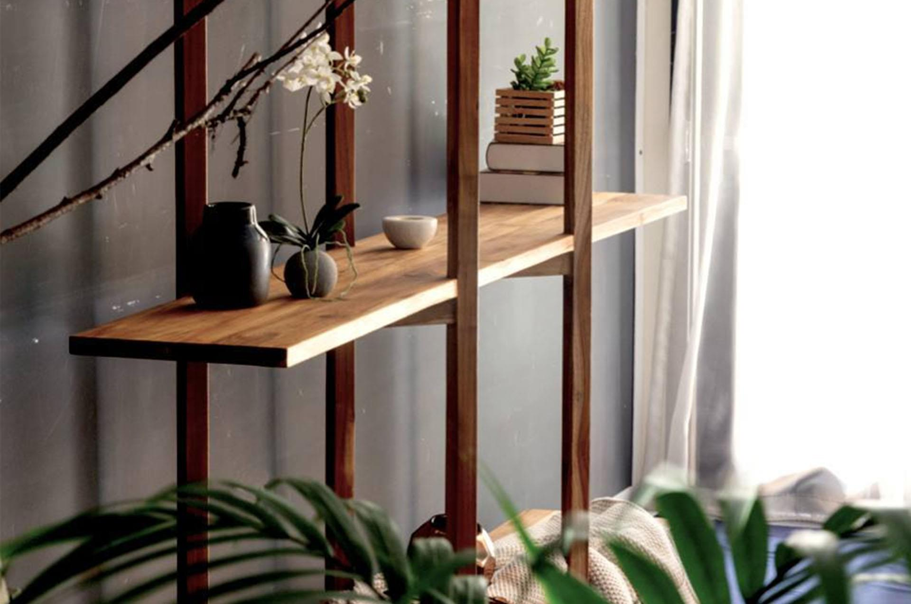
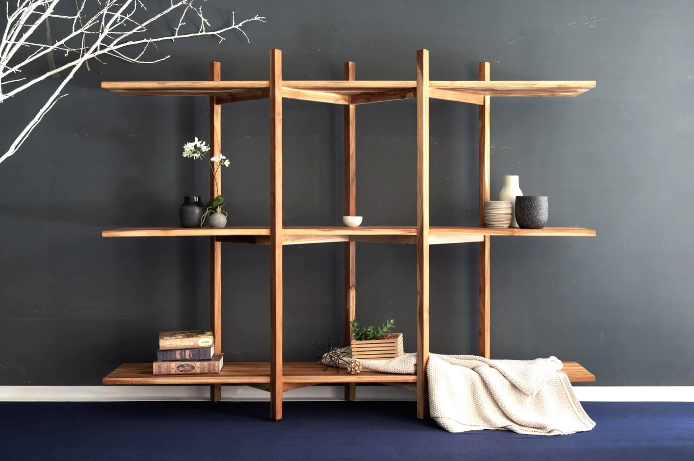

日日
書櫃木頭是我的療癒系 - 日日書櫃 。『柚』喜歡木頭，在窗邊下、在書房裡有時柔和、或是古樸的潔淨、或是療癒的色澤經常拿來放置書本與燭台的板上已被染上了日記使用的暗色痕跡不太在意，甚至更喜歡隨著日日使用不同表情不同層次的原始感我想這是只有柚木能夠給予的歷史光澤自家的窗邊與書房風景中豐富不顯雜亂。傢，在素淨裡更顯豐繞!
表面材質
木頭是我的療癒系 - 日日書櫃 。『柚』喜歡木頭，在窗邊下、在書房裡有時柔和、或是古樸的潔淨、或是療癒的色澤經常拿來放置書本與燭台的板上已被染上了日記使用的暗色痕跡不太在意，甚至更喜歡隨著日日使用不同表情不同層次的原始感我想這是只有柚木能夠給予的歷史光澤自家的窗邊與書房風景中豐富不顯雜亂。傢，在素淨裡更顯豐繞!
表面材質